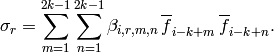

PyWENO Reference¶
WENO class¶
- class pyweno.weno.WENO(order=3, cache=None, format='mat', smoothness='jiang_shu', grid=None)¶
Weighted Essentially Non-Oscillatory reconstruction class.
Basic usage
XXX
Instance variables
- grid - spatial grid
- order - order of stencil approximations
- beta - smoothness indicator coefficients
- c - dictionary of reconstruction coefficients
- w - dictionary of optimal weights
Keyword arguments (without cache)
- grid - spatial grid (pyweno.grid.Grid)
- order - order of approximation
- smoothness - type of smoothness indicator to use
Keyword arguments (with cache)
- cache - cache file
- order - order of stencil approximation
- format - format of cache file (default is 'mat')
Methods
- cache(output, format='mat')¶
Store grid, all reconstruction coefficients, all optimal weights, and smoothness indicator coefficients in the cache file output.
Supported formats are:
- 'mat' - MATLAB compatible matrix file (through SciPy)
- 'h5py' - HDF5 file (through H5PY)
The reconstruction coefficients, optimal weights, and smoothness indicator coefficients are appended to the cache file. That is, they are overwritten if they previously existed (for k), but all other contents are preserved.
- precompute_reconstruction(key, xi=None)¶
Precompute reconstruction coefficients and optimal weights for reconstructing at the points specified by key.
If xi is None, XXX
If xi isn’t None, XXX
- reconstruct(q, key, qs, compute_weights=True)¶
Reconstruct q at the points specified by key and store result in qs.
Use the weights corresponding to the key weights. If weights is none, compute the weights associated with they key key and use them.
- smoothness(q)¶
- Compute smoothness indicators of q.
- weights(key)¶
- Compute weights associated with last set of smoothness indicators computed.
Grid class¶
- class pyweno.grid.Grid(boundaries=None, cache=None, format='mat')¶
Unstructured spatial grid (discretisation).
Basic usage
From scratch:
>>> x = numpy.array([-4.0, -1.0, -0.5, 0.0, 0.5, 1.0, 4.0, 10.0]) >>> grid = pyweno.grid.Grid(x)
From a cache:
>>> grid = pyweno.grid.Grid(cache='mycache.mat')
Averaging a function:
>>> f = lambda x: x**2 >>> f_avg = grid.average(f)
Cache to a MATLAB file (through SciPy):
>>> grid.cache('mycache.mat')
Cache to an HDF5 file (through H5PY):
>>> grid.cache('mycache.h5', format='h5py')
Instance variables
- size - number of cells (also N)
- x - grid boundaries
The constructor precomputes the cell centres and sizes from the cell boundaries.
Keyword arguments (without cache)
- boundaries - list of grid cell boundaries, eg, numpy.linspace(-1.0, 1.0, 20+1)
The cell boundaries do not have to be structured (ie, uniformly spaced).
Keyword arguments (with cache)
- cache - cache filename
- format - cache format (default is ‘mat’)
Methods
- average(f)¶
- Return cell averages of f.
- boundaries()¶
- Return array of N+1 cell boundaries.
- cache(output, format='mat')¶
Store cell boundaries in the cache file output.
Supported formats are:
- 'mat' - MATLAB compatible matrix file (through SciPy)
- 'h5py' - HDF5 file (through H5PY)
The cell boundaries are appended to the cache file. That is, they are overwritten if they previously existed, but all other contents are preserved.
- centers()¶
- Return array of N cell centers.
- centres()¶
- Return array of N cell centres.
- sizes()¶
- Return array of N cell sizes.
Stencil class¶
- class pyweno.stencil.Stencil(grid=None, order=None, quad=None, shift=None, cache=None, format='mat')¶
Polynomial approximation stencil.
The Stencil class is usually used the WENO class, but can be used by itself too.
The cell averages f_j of a function f can be used to approximate the value of f (and its derivatives) according to

where the coefficients c_j are the reconstruction coefficients. The Stencil class is used to precompute various sets of reconstruction coefficients and cache them.
Basic usage
From scratch:
>>> stencil = pyweno.stencil.Stencil(order=k, shift=r, grid=grid)
From a cache:
>>> stencil = pyweno.stencil.Stencil(orker=k, shift=r, cache='mycache.mat')
Pre-compute reconstruction coefficients at the left and right boundaries:
>>> stencil.reconstruction_coeffs('left') >>> stencil.reconstruction_coeffs('right')
Reconstruct a function at the left boundaries:
>>> c = stencil.c['left'][i,:] >>> v_left = numpy.dot(c, v_avg[i-r:i-r+k])
Cache to a MATLAB file (through SciPy):
>>> stencil.cache('mycache.mat')
Cache to an HDF5 file (through H5PY):
>>> stencil.cache('mycache.h5', format='h5py')
Instance variables
- grid - spatial grid (pyweno.grid.Grid)
- order - order of approximation (also k)
- shift - left shift (also r)
- c - dictionary of reconstruction coefficients
Keyword arguments (without cache)
- order - order of approximation
- shift - left shift of the stencil or None
- grid - spatial grid
The default shift (computed when shift is None) is a centered difference shift (ie, shift = order/2 + order%2).
The left shift shift can take values from 0 to order-1.
Keyword arguments (with cache)
- order - order of approximation
- shift - left shift of the stencil or None
- cache - cache filename
- format - cache format (default is 'mat')
Methods
- cache(output, format='mat')¶
Store all reconstruction coefficients in the cache file output.
Supported formats are:
- 'mat' - MATLAB compatible matrix file (through SciPy)
- 'h5py' - HDF5 file (through H5PY)
The reconstruction coefficients are appended to the cache file. That is, they are overwritten if they previously existed (for k and r), but all other contents are preserved.
- reconstruction_coeffs(key, xi=None)¶
Pre-compute reconstruction coefficients.
The reconstruction coeffs c_j are computed and stored in the instance dictionary c.
Arguments:
- key - key used to store this set of reconstruction coeffs
- xi - callable which returns an array of points within each cell at which to compute the reconstruction coefficients (called as xi(i))
Preceeding the key with d| will compute the reconstruction coefficients to approximate the first derivative at the reconstruction points.
There are several predefined keys:
- 'left' - the left edge of each cell
- 'right' - the right edge of each cell
- 'gauss_quad3' - the Gaussian 3-point quadrature points
For example, to compute the reconstruction coeffs used to reconstruct the derivative of a function f at the left edge of each grid cell:
>>> stencil.reconstruction_ceoffs('d|left') >>> c = stencil.c['d|left']
As another example, to compute the reconstruction coeffs used to reconstruct the value of a function at some other point(s) within each cell:
>>> xi_mypts = lambda i: 0.5 * (grid.x[i] + grid.x[i+1]) >>> stencil.reconstruction_ceoffs('mypts', xi_mypts) >>> c = stencil.c['mypts']
Fast stencil routines¶
- pyweno.stencil.reconstruction_coeffs(xi, i, r, k, x, c, d=0)¶
Compute the reconstruction coefficients c_j and store the results in c (indexed as c[j]).
The reconstruction coefficients c_j are used to approximate the d‘th derivative of a function f given its cell averages f_j according to
This function wraps a fast C implementation.
Arguments:
- xi - reconstruction point
- i - cell index (ie, index of the cell that containts xi)
- r - left shift
- k - order
- d - order of derivative (defaults to 0)
- x - cell boundaries
- c - computed reconstruction coefficients (returned)
Return: the reconstruction coefficients are destructively stored in c.
Smoothness indicators¶
PyWENO smoothness indicators.
- pyweno.smoothness.beta(smoothness, grid, k, beta)¶
Compute smoothness indicator coefficients and store result in beta.
This function is usually called by the WENO class.
In general, the smoothness indicator sigma for the cell i and stencil with left shift r is of the form

There is currently only one smoothness indicator type implemented ('jiang_shu').
Arguments
- smoothness - smoothness indicator type
- grid - grid (can be unstructured)
- k - order
Version information¶
PyWENO version information.
To obtain the version of PyWENO:
>>> import pyweno.version
>>> pyweno.version.version()
>>> pyweno.version.git_version()